Question 1 - Harris Corner Detection
First, read in the image, and apply gaussian smoothing with standard deviation sigma_smoothing. Then, compute the x and y derivative images 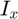 and 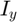 and hence the structure tensor A at each point. Finally, use the eigenvalues 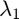 and 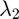 at each point to find cornerness, C, given by 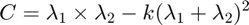
Contents
myNumOfColors = 200; myColorScale = [ [0:1/(myNumOfColors-1):1]' , [0:1/(myNumOfColors-1):1]' , [0:1/(myNumOfColors-1):1]' ]; im_0 = load("../data/boat.mat"); im_0 = cast(im_0.imageOrig, 'uint8'); [M,N] = size(im_0); % Gaussian Smoothing sigma_smoothing = 4; im = imgaussfilt(im_0, sigma_smoothing);
Derivative Images
Convolve the smoothed image with the sobel operator to compute the x and y derivatives of the image. Display these. Note that the x derivative will highlight vertical edges, while the y derivative will highlight horizontal edges.
sobel_x = [-1 0 1; -2 0 2; -1 0 1]; sobel_y = [1 2 1; 0 0 0; -1 -2 -1]; im_Ix = conv2(im, sobel_x, 'same'); im_Iy = conv2(im, sobel_y, 'same'); figure(), imagesc(cast(im_Ix,'uint8')), title("X derivative"), colormap(myColorScale), daspect([1 1 1]), colorbar, truesize; figure(), imagesc(cast(im_Iy,'uint8')), title("Y derivative"), colormap(myColorScale), daspect([1 1 1]), colorbar, truesize;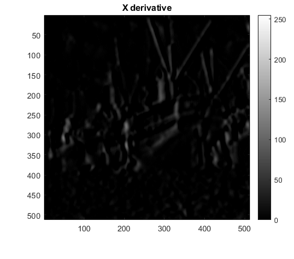 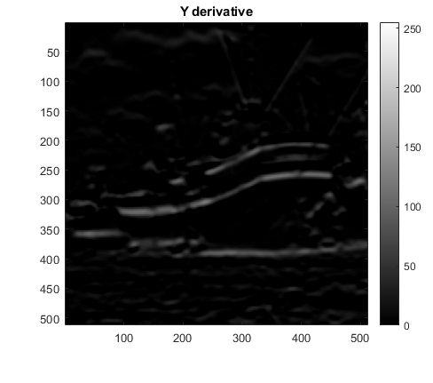
Structure Tensor Calculation
To compute the structure tensor, observe from its formula that the first entry of the structure tensor matrix (the summation) is nothing but the filter w(u,v) convolved with an image with value at each location equal to the square of the x derivative of the image at that location. Similarly for the other entries. We use these observations to compute the entries of the structure tensor A at each point, and then use this to compute the eigenvalues of the structure tensor at each point. Finally, display the images corresponding to the matrices that store the eigenvalues. We can observe that along edges of the ship's hull, for example, the second eigenvalue comes out to be large, while the first comes out to be small. Only along corners are both eigenvalues large. The first eigenvalue may thus be called the "principal" eigenvalue, since it seems to determine which points we actually classify as corners. Note that in our case, w(u,v) is a standard gaussian kernel of bandwidth parameter sigma. Sigma is kept relatively small, since if we increase it, more points along edges are attributed as corners, which we don't want.
im_Ix2 = im_Ix.*im_Ix; im_Iy2 = im_Iy.*im_Iy; im_IxIy = im_Ix.*im_Iy; % structure tensor evaluation sigma = 1.5; % matrices corresponding to A11, A12=A21 and A22 A11_mat = imgaussfilt(im_Ix2, sigma); A12_mat = imgaussfilt(im_IxIy, sigma); A22_mat = imgaussfilt(im_Iy2, sigma); % store eigenvalues in two matrices im_lambda1 = zeros(M,N); im_lambda2 = zeros(M,N); % at each pixel (i,j), compute A11, A12=A21, and A22, and hence eigenvalues for i = 1 : M for j = 1 : N % structure tensor A11 = A11_mat(i,j); A12 = A12_mat(i,j); A22 = A22_mat(i,j); A = [A11 A12; A12 A22]; % eigenvalues e = eig(A); im_lambda1(i,j) = e(1); im_lambda2(i,j) = e(2); end end figure(), imagesc(cast(im_lambda1,'uint8')), title("1st eigenvalue"), colormap(myColorScale), daspect([1 1 1]), colorbar, truesize; figure(), imagesc(cast(im_lambda2,'uint8')), title("2nd eigenvalue"), colormap(myColorScale), daspect([1 1 1]), colorbar, truesize;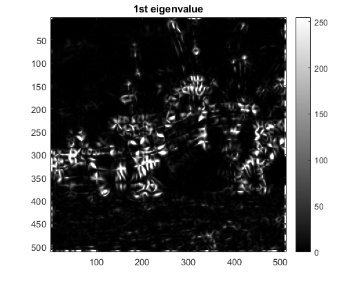 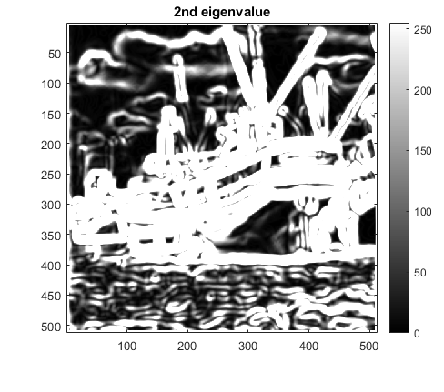
Cornerness Measure
Using the two matrices to store the two eigenvalues at each point, we compute the cornerness measure at each point, tuned by the free parameter 'k'. Note that k is kept on the higher side since we don't want too many pixels to be denoted as corners.
k = 0.24; C = (im_lambda1 .* im_lambda2) - k*((im_lambda1 + im_lambda2).*(im_lambda1 + im_lambda2));
Non max suppression (using Bilinear Interpolation)
To refine the result, apply non-maximum suppression on C. However, this is not expected to significantly improve the result since most of the image C has flat regions of negligible cornerness, with sparsely distributed "corner" points.
C_nms = C; % gradient of cornerness image C_x = conv2(C, sobel_x, 'same'); C_y = conv2(C, sobel_y, 'same'); for i = 2 : M-1 for j = 2 : N-1 % gradient magnitude vp = sqrt(C_x(i,j)^2 + C_y(i,j)^2); if(vp==0) continue end % unit vector along gradient u_x = C_x(i,j)/vp; u_y = C_y(i,j)/vp; % interpolate vp_plus_u = BilinearInterpolation(C,i,i+sign(u_x),j,j+sign(u_y),i+u_x,j+u_y); vp_minus_u = BilinearInterpolation(C,i,i-sign(u_x),j,j-sign(u_y),i-u_x,j-u_y); if(vp < vp_plus_u || vp < vp_minus_u) C_nms(i,j) = 0; end end end figure(), imagesc(im_0), title("Original Image"), colormap(myColorScale), daspect([1 1 1]), colorbar, truesize; figure(), imagesc(cast(C,'uint8')), title("Cornerness"), colormap(myColorScale), daspect([1 1 1]), colorbar, truesize; figure(), imagesc(cast(C_nms,'uint8')), title("Cornerness - NonMax Suppresion"), colormap(myColorScale), daspect([1 1 1]), colorbar, truesize;
Bilinear Interpolation
Bilinear Interpolation, given the corners of the square in which (x,y) lies (from previous assignment)
function [val] = BilinearInterpolation(img, x1, x2, y1, y2, x, y) img = double(img); D = (x1-x2)*(y1-y2); q1 = img(x1,y1)*(x2-x)*((y2-y)/D); q2 = img(x1,y2)*(x2-x)*((y-y1)/D); q3 = img(x2,y1)*(x-x1)*((y2-y)/D); q4 = img(x2,y2)*(x-x1)*((y-y1)/D); val = q1 + q2 + q3 + q4; end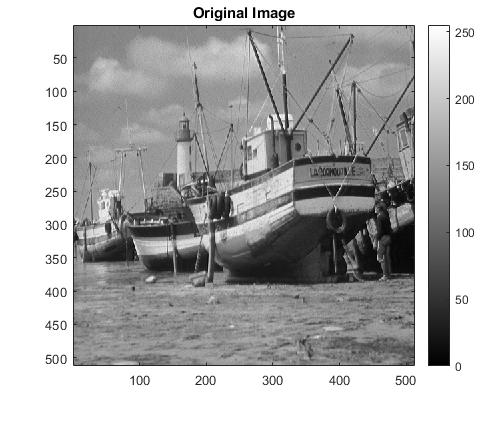 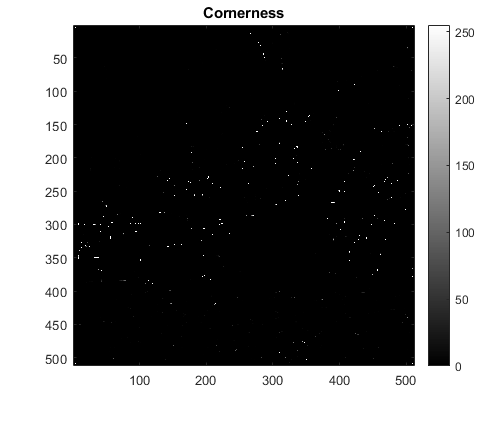 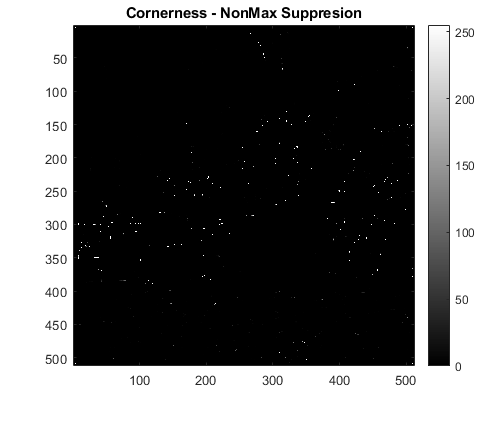
Parameter Values used
sigma(gaussian kernel of w(u,v)) = 4
sigma_smoothing = 1.5
k(cornerness) = 0.24